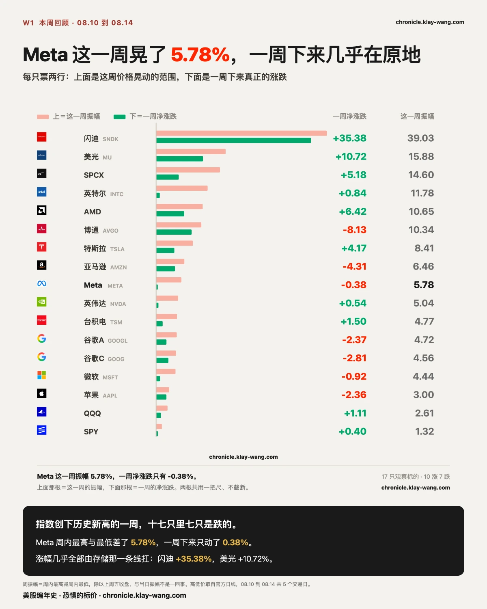
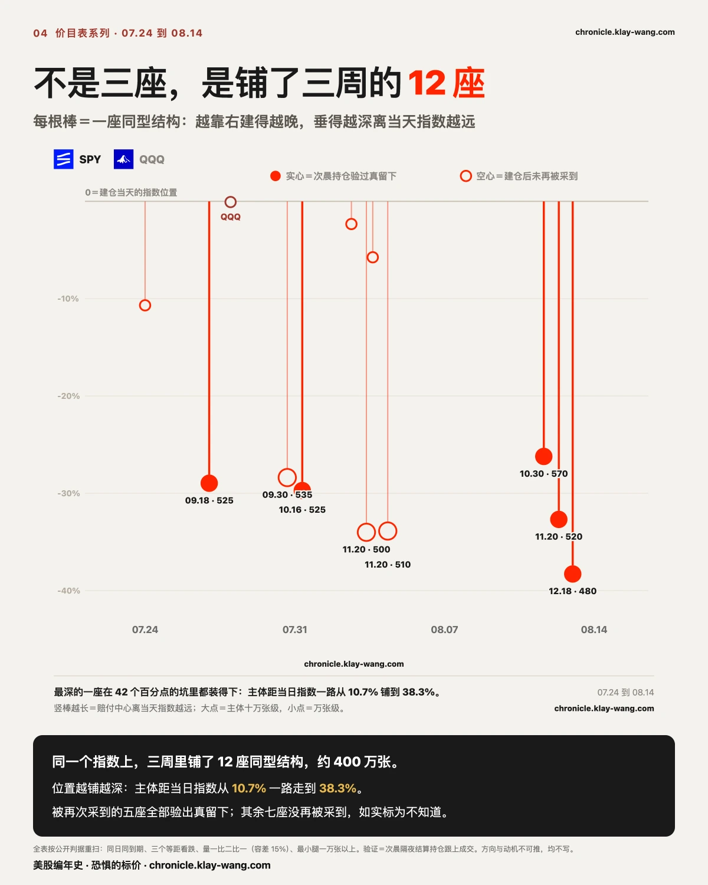
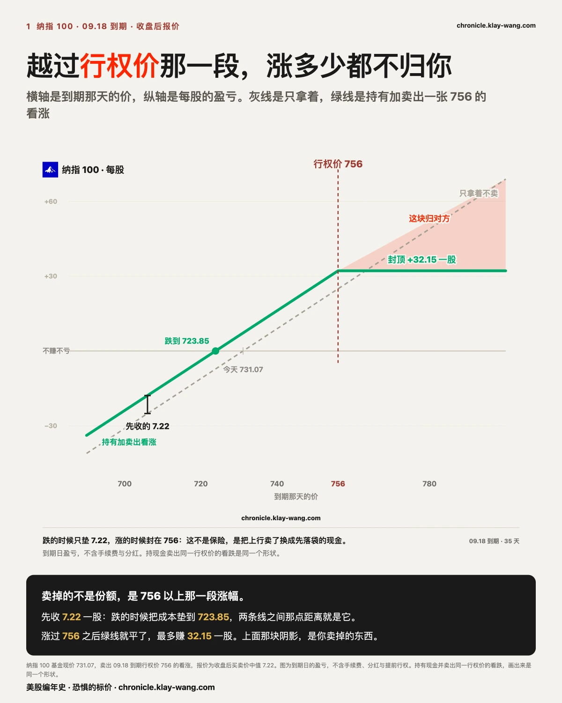
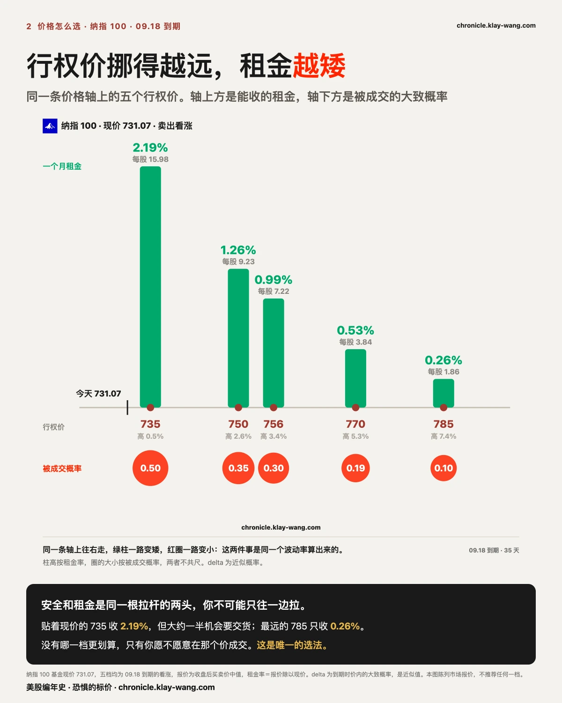
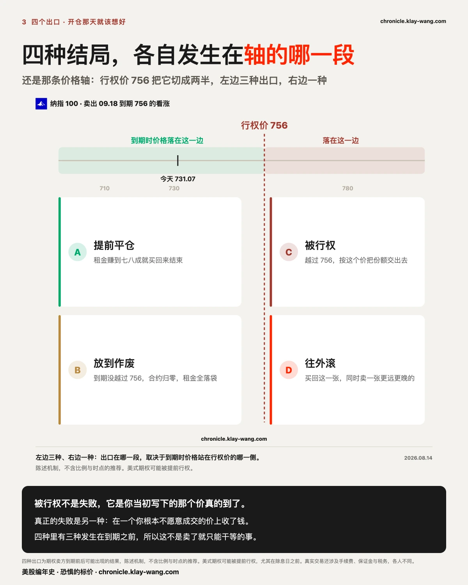

还在看 13F ？真正赚钱的人都是这样操作和复盘 - 本周回顾 · 8.10-8.14
⚡ 三行干货
- 我们自己写下的两个作废条件本周全部触发，原文一个字没删；指数两创新高，而十七只里七只是跌的。
- 全表重扫后不是三座，是三周里铺了十二座、约 400 万张，主体位置从跌 10.7% 一路走到跌 38.3%。这些全是当天就看得见的。
- 而周五的 13F 讲的是六周前的事。同一个问题两种答法：7 月 24 日挂在链上的那个价，要等到 11 月 14 日才进申报文件，中间隔 113 天。
这一期讲什么
第 1 到第 3 节是本周的三个亮点：说错的两条怎么认账、新高背后十七只里七只在跌、以及三周铺出来的十二座价目表。
第 4 节讲周五的 13F 为什么是旧闻，第 5 到第 7 节讲同一个问题在期权链上怎么当天就有答案，以及你手里有票的话这套东西怎么用。
不着急的话，读完第 3 节和第 5 节就有数了。

〔对账〕被推翻的那两条，我们一个字没删
周三通胀日，开奖前挂出的围栏兜住了，我们写了一句：市场提前把这场开奖标对了价。同一段里也挂了作废条件：如果周四生产者价格落地时同样的围栏被冲破，那这次就只是碰对，不是标对。
第二天它就被冲破了。指数盘中越过上沿 2.62 点，收盘也留在栏外。按我们自己写下的规矩，那句判断当场降级，原文一个字没改。
横截面那条同样被触发。周三我们记到十六只高开、十四只被从开盘一路卖回去，写了句这是开奖日当天的形状，作废条件是第二天盘中若普遍转正，这个回落就只属于那一天。第二天十七只里十三只盘中转正，条件成立。
四组开奖对上，两条挂出去没回来验，照记为欠账。能被推翻的判断才叫判断。

〔横截面〕指数两创新高，十七只里七只在跌
这一周标普 500 基金涨 0.40%，纳指 100 基金涨 1.11%，周三周四各创一次历史新高。同一周，我们观察的十七只里有七只是跌的。
两头拉得很开：闪迪涨 35.38%、美光涨 10.72%、AMD 涨 6.42% 在一头；博通跌 8.13%、亚马逊跌 4.31% 在另一头。首尾相差四十三个百分点。指数那 0.40%，是这些东西相互抵消之后剩下的残值。
还有一个数比涨跌幅更值得看：振幅，一周里最高价和最低价之间的距离。英特尔这一周涨了 0.84%，几乎等于没动，但它的振幅是 11.78%。也就是说它在一个将近十二个点的区间里来回走了一趟，最后回到原地附近。拿着它的人，中间见过相差一成多的两个价格。
涨跌幅是位移，振幅是这只票真实走过的路。同一只票同一周，这两个数可以差十倍。
顺带一句成本侧：一个月内的波动率从 15.46 降到 14.25，降了 1.21 个点；而一年期从 22.76 到 22.75，一周只动了 0.01。近端是情绪，远端是成本，这一周松的只有情绪。

〔纵深〕不是三座，是铺了三周的十二座
本周日更里写过三座同型结构。周末我们把全表重扫了一遍，按同样的公开判据：同一天同一个到期、三个等距的看跌价位、张数一比二比一、最小那条腿一万张以上。
结果是十二座，从 07.24 一直排到 08.13，合计约 400 万张，其中十一座在标普 500 基金上，一座在纳指 100 上。
连起来才看得见两条形状。一是同一个到期被反复搭：11.20 那个到期被搭了三次，08.03、08.04、08.12 各一次，而且每次整体上移 10 点，跟着指数往上挪。二是越铺越深：主体距当日指数的距离，从最早那座的 10.7%，一路走到最新那座的 38.3%。
已经被再次采到的五座全部验出真沉淀；其余七座建仓后没再被采到，标为不知道，不猜。
红线不变：不写这是什么结构、不猜谁在做、不推方向。我们能说的只有形状和沉淀。
但有一件事这十二座已经说清楚了：三周里，有人一次又一次把如果跌、要在哪个位置拿到赔付，写在了明面上。每一次都是当天就能看见的。
记住这句，下一节马上要用到。
〔13F〕新闻是新的，交易是旧的
上一节那十二座，最要紧的一点是：它们全都是当天就能看见的。 建仓那天成交摆在那儿，第二天早上的持仓给出答案，谁都能查。
而这一周还有另一类信息刚刚露面，性质完全相反。
周五是二季度 13F 报告的申报截止日。你这两天大概率刷到了一批某某清仓某某的标题。
13F 是季末持仓快照。二季度截到 6 月 30 日，申报期限 45 天，正好是周五。所以那些文件是这两天才出现的，里面描述的交易发生在六周以前。
它还有两件事不告诉你：不告诉你什么时候买的，也不告诉你用什么价买的。 你只能看见季末那一刻手里剩下什么。
拿一份描述 6 月底持仓的文件去解释这两天任何一只票的涨跌，是把申报日期当成了交易日期。

〔另一条路〕同一个问题，期权链当天就答了
有一个地方不用等六周：期权链。因为一份合约上写着的，正是 13F 缺的那两样东西：什么价，什么时候之前。
举个我们表里记到的例子。2026 年 7 月 24 日，长天期异动表多了一行：SpaceX 12.18 到期、行权价 115 的看跌合约，当天成交 1109 张，进场持仓 7447 张。第二个交易日隔夜持仓变成 8398 张，净增 951 张，留下了当天成交的 85.8%，按我们固定的判据属于真建仓。
那天我们不知道是谁。一个月后，段永平公开说了这笔交易：卖了 1000 张，每股收 23.26 美元。我们量出 951，他自己报 1000，对上了。
这笔账真正的关键，不是他收了 232.6 万，是他的接货成本不是 115，是 91.74。 因为 23.26 已经先收进来了。整笔交易就是一句话：现在的价我不急着买，你付我每股 23.26，未来五个月你愿意的话我按 115 接。
12 天后财报落地，SpaceX 收 108.27、当天跌 13.61%、盘中最低到过 106.66。他没等着被行权，直接买了 10 万股。说的和做的是同一件事。
现在回头算日子：这个价 7 月 24 日就挂在链上，谁都看得见；而它要出现在申报文件里，得等三季度报告，也就是 11 月 14 日。中间隔 113 天。
图上那条线就是这件事的形状：选定的那个价是竖线，到期时没越过它，收的钱全归你；越过了，那一段就跟你没关系，线从那里开始就平了。

〔怎么用〕你手里有票的话，这套东西怎么读
量级跟你无关，方法跟你有关。搬到更多人手里真有的东西上，比如纳指 100。同一只票同一个到期日，只换行权价，08 月 14 日收盘后的真实报价是这样：
| 被成交概率 | 行权价 | 距现价 | 一个月租金 |
|---|---|---|---|
| 0.50 | 735 | 高 0.5% | 2.19% |
| 0.30 | 756 | 高 3.4% | 0.99% |
| 0.19 | 770 | 高 5.3% | 0.53% |
| 0.10 | 785 | 高 7.4% | 0.26% |
贴着现价卖，一个月收 2.19%，但大约一半机会要交货；挪到高 7.4% 的地方安全多了，只收 0.26%。安全和租金是同一根拉杆的两头，你不可能只往一边拉。
所以没有哪一档更划算。只有一个问题：你愿不愿意在那个价成交。 愿意就是那一档，不愿意，租金再高也跟你无关。这就是全部的选法，也正是前一节那笔交易在做的事。
反过来卖看跌是同一张表倒着看：0.30 对应 711（低 2.7%）收 1.24%，0.10 对应 666（低 8.9%）收 0.38%。一个细节：越往下的看跌，隐含波动率越高，从 20.5 升到 25.4。这是常见的偏斜，不是数据错了，市场对下跌的定价从来比对上涨贵。
那几个吓人的词，一句话就够。 隐含波动率，市场猜它未来会晃多厉害，像车险保费看你开车猛不猛；分位，今天这个价钱在它自己过去一年里排第几；Delta，到期时被成交的大致概率，0.30 就是大约三成机会真要交货；Theta，你收的那笔钱靠时间一天天变成你的，像冰块放在桌上。这几个词都不预测涨跌，只描述价钱和概率。
日期上，三十到四十五天是常见区间，更要紧的是看窗口里有没有它的财报。举我们表里的例子：09 月 18 日到期这个窗口，九只观察票里只有英伟达要在窗口内交卷，其余的都排在 10 月底以后。

〔收手〕四种结局，开仓那一刻就全在桌上了
提前平仓：租金赚到七八成就买回来结束，剩下那点钱要拿最后几天的风险去换。
放到作废：到期没越过行权价，合约归零，收的钱全落袋，票还在手上。
被行权：价格越过行权价，票按那个价交出去，或者按那个价接进来。
往外滚：买回这一张，同时卖一张更远更晚的，代价是钱压得更久。
四种里有三种发生在到期之前，所以这不是卖完就只能干等的事。
关于被行权要多说一句：它不是失败，是你当初写下的那个价真的到了。 真正的失败是另一种：在一个你根本不愿意成交的价上收了钱，价格真到了才发现自己不想接。
所以整件事的顺序是：先想清楚你愿意在什么价成交，再去看市场给这个价开了多少钱。 反过来做的人，是先看见租金高，再回头说服自己愿意那个价。
⚠️ 期权卖方承担被行权的义务，美式期权可提前行权。本节写的是怎么读这几个数，不是该买什么。
〔下周看点〕本周记的账，大多数在下周五开奖
- 周二 08.18：Reddit 开盘前正式进入标普 500。公告日的跳空 11.17 个百分点已经记下，生效日的跳空到时候对照，这是两段完全不同的定价。
- 周三 08.19：波动率期货换月日，曲线形状要连着滚动效应一起读。
- 周五 08.21：月度期权到期日，本周记录在案的合约绝大多数在那天开奖，逐案收卷。
这篇适合转给谁
- 手里拿着指数基金、但从来没卖过 covered call 的人：第 5 到第 7 节就是给他的，五分钟能看完，看完至少知道自己在决定什么。
- 每次刷到某某清仓某某就跟着紧张的人：第 4 节告诉他那些文件描述的是六周前的事。
- 问过你大资金到底在干嘛的人：第 3 节那十二座就是答案的一部分，而且是当天就摆在明面上的。
今天值得带走的三句话
- 申报文件告诉你他们买了什么，期权链告诉你他们愿意用什么价买。前者要等 113 天，后者当天就写着。
- 一笔交易真正的成本不是行权价，是行权价减去先收到的那笔钱。段永平那笔是 115 减 23.26 等于 91.74。
- 安全和租金是同一根拉杆的两头。所以没有哪一档更划算，只有一个问题：你愿不愿意在那个价成交。
本站不提供投资建议，不预测方向，不做择时。